Steam-porthole
Detail-dense reflective brass/copper device — the subject LTX has repeatedly done best on.
fal-ai/ltx-2.3-22b/image-to-video/lora + Cinemagraph LoRA (scale 1.0) ·
768×1024 · 25f · steps 30 · cfg 4.0 · stg 0 · multiscale off · quality=maximum · seed 1207 ·
~$0.0355
Identity: all 5 button glyphs (play/pause, rewind, ff, repeat, list), both gauges,
gear cluster and slider stay legible and correctly shaped end-to-end — the best LTX steam result of all 7
rounds, confirming round 6's finding.
Defect: frame 0 (the very first output frame, 1/24s) decodes as a soft
painterly blur with unlegible glyphs — a single-frame VAE artifact that fully resolves by frame 1 and never
recurs. Trimmed from the delivered ping-pong (starts at frame 1); visible only in the raw toggle.
Seam / motion: steam wisp emerges cleanly top-right, no glow; mild global tonal
drift + minor gear/emblem shimmer across the 25 frames masks acceptably under ping-pong.
Regression, not an improvement: the steam plume over-grows into a large
fog blob that occludes the right-side button row (repeat/list glyphs disappear behind it) and bleeds into
the porthole glass by mid-clip. Higher resolution did NOT continue to help past 768×1024 — kept only for the
record; 768×1024 is the delivered LTX steam recipe.
fal-ai/bytedance/seedance/v1/pro/image-to-video (Seedance 1.0 Pro) ·
1080p (1248×1664) · 5s/121f · aspect 3:4 · camera_fixed=true · seed 4242 (re-roll) · ~$0.74
Identity: all 5 button glyphs, both gauges, gear cluster and slider position stay
pixel-stable across the full 5s clip — no morph, no invented parts.
Defect found on roll 1 (seed 1207, discarded): the slider thumb visibly slid
left→right across the clip despite the prompt saying it never moves — Seedance's "media player" prior
overriding an explicit static-slider instruction. Re-rolled with seed 4242 and a strengthened prompt
("NOT a media player interface... slider thumb is glued... does not slide") — fixed, confirmed static in the
delivered clip (crop evidence below).
Remaining minor defect: the steam plume grows moderately large by mid/late
clip and its haze becomes visible through the porthole glass — softer than the LTX 960 occlusion (buttons
stay fully visible) but not a clean freeze.
Diablo-gothic
Dark, low-contrast carved-stone device — out-of-distribution for the LTX Cinemagraph LoRA per
round 6; the harder test for both models.
fal-ai/ltx-2.3-22b/image-to-video/lora + Cinemagraph LoRA · 768×1024
(bumped from round 6's 512×704) · 25f · same settings as steam · quality=maximum · seed 1207 · ~$0.0355
Device fully resynthesized by mid-clip: the top loop button becomes a gold
glowing circle, the center play/pause becomes an eyeball icon, the left rewind becomes a green ring, and the
two dark glass screens become an invented 4-icon app grid with skull/monster glyphs. Glow present
(amber circle, red rune bloom) despite explicit no-glow negatives. Confirms round 6: higher resolution and
maximum quality do NOT rescue this OOD subject — LTX is not usable on dark stylized UI art at any tested
setting.
fal-ai/bytedance/seedance/v1/pro/image-to-video (Seedance 1.0 Pro) ·
1080p (1248×1664) · 5s/121f · aspect 3:4 · camera_fixed=true · seed 1207 · ~$0.74
Identity: every skull, rune glyph, button icon, screen edge and the slider position
are pixel-stable across all 5 sampled frames (start/25%/50%/75%/end) — no drift, no morph, no invented
content, confirmed at full-res close-up crop below.
Motion: grey ash/dust motes drift in from the edges and a thin smoke wisp curls
upward near the top — matches the brief exactly. The baked-in red rune color is static artwork from the
source image, not animated pulsing (no brightness change frame-to-frame — checked directly).
No re-roll needed — clean on the first attempt.
Verdict table
| clip | model | res | identity | motion quality | ping-pong seam | verdict |
|---|---|---|---|---|---|---|
| steam · LTX 768×1024 | LTX-2.3 + Cinemagraph LoRA | 768×1024 | 5/5 button glyphs legible, gauges/gear cluster intact | clean steam wisp, no glow | frame-0 blur trimmed pre-ping-pong; otherwise clean | NEAR-PASS |
| steam · LTX 960×1280 probe | LTX-2.3 + Cinemagraph LoRA | 960×1280 | buttons occluded by over-grown plume | plume grows uncontrolled | occlusion persists both directions | REJECTED |
| steam · Seedance 1.0 Pro (seed 4242, re-roll) | Seedance 1.0 Pro | 1080p | buttons/gauges/gear/slider all static | steam plume moderately over-grown, hazes glass | clean bounce, no pop | NEAR-PASS |
| diablo · LTX 768×1024 | LTX-2.3 + Cinemagraph LoRA | 768×1024 | fully resynthesized by mid-clip, invented icon grid | glow present despite negatives | n/a — content wrong throughout | HARD FAIL |
| diablo · Seedance 1.0 Pro (seed 1207) | Seedance 1.0 Pro | 1080p | pixel-stable: skulls, runes, buttons, slider, screens | grey dust/ash + thin smoke, on-brief, no glow | clean bounce, no pop | PASS |
Full-res verification crops
Per
verify-outputs-rule §1b: close-up crops of control clusters/glyphs, start vs
end frame, at native resolution (upscaled for viewing). These are the evidence behind the verdicts above.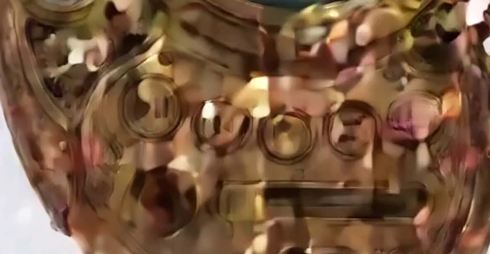
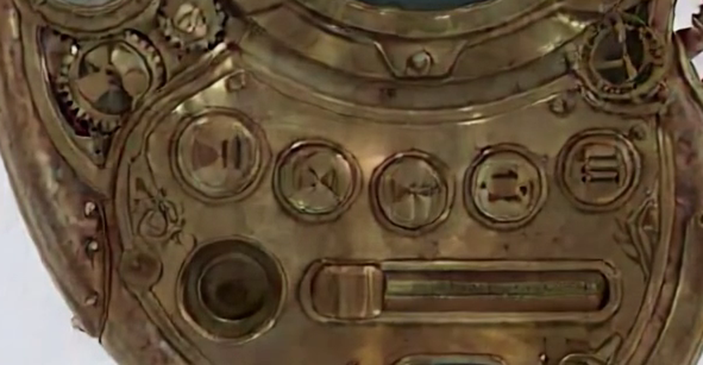
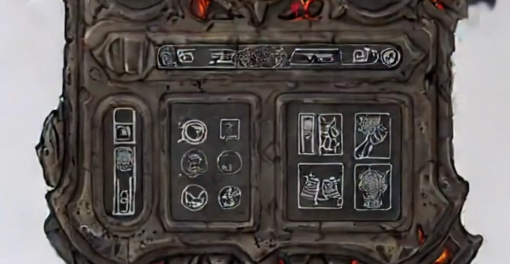
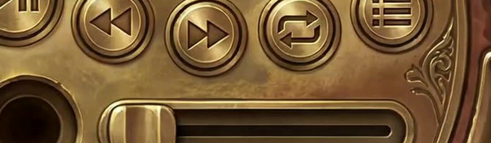
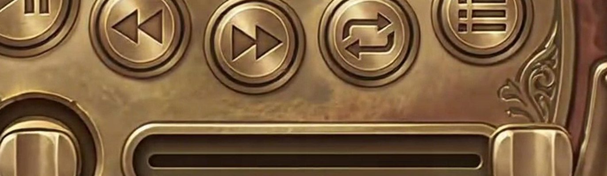
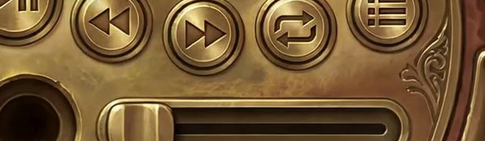
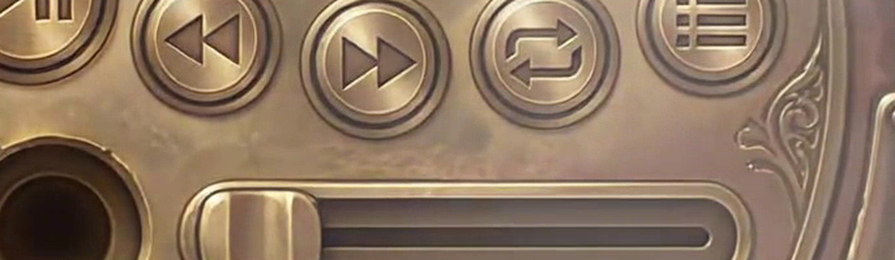
Full-frame start/end stills
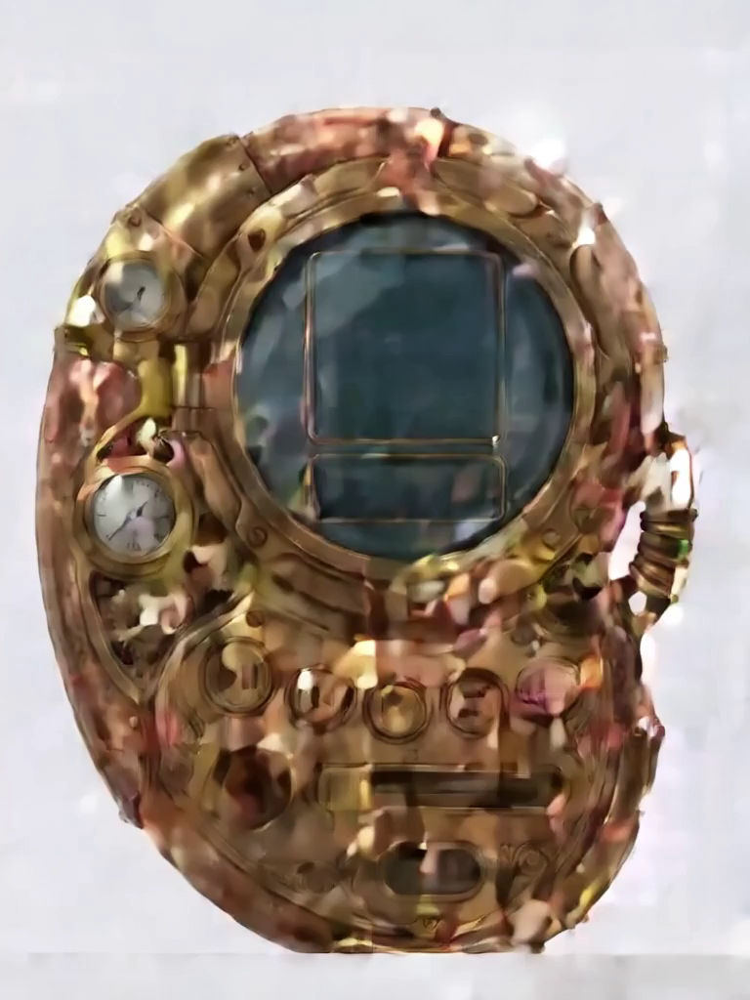
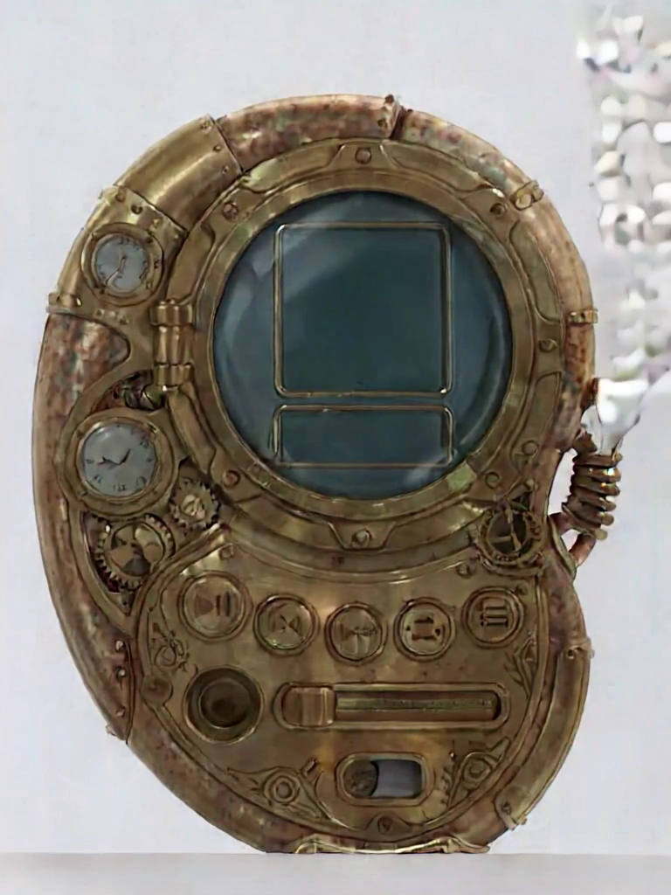
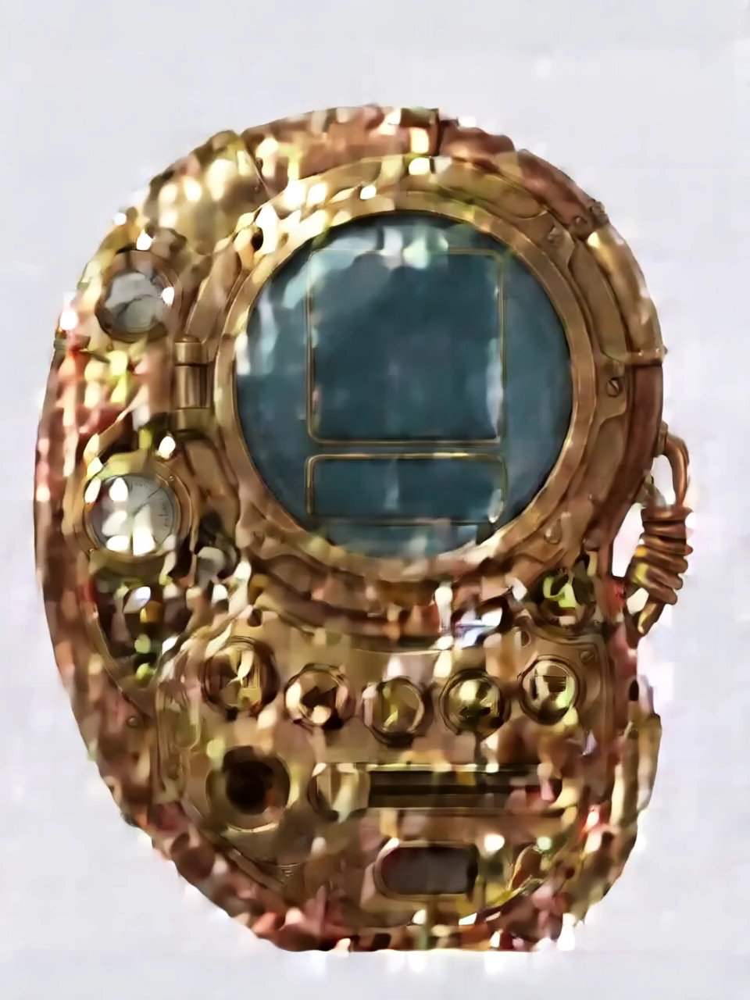
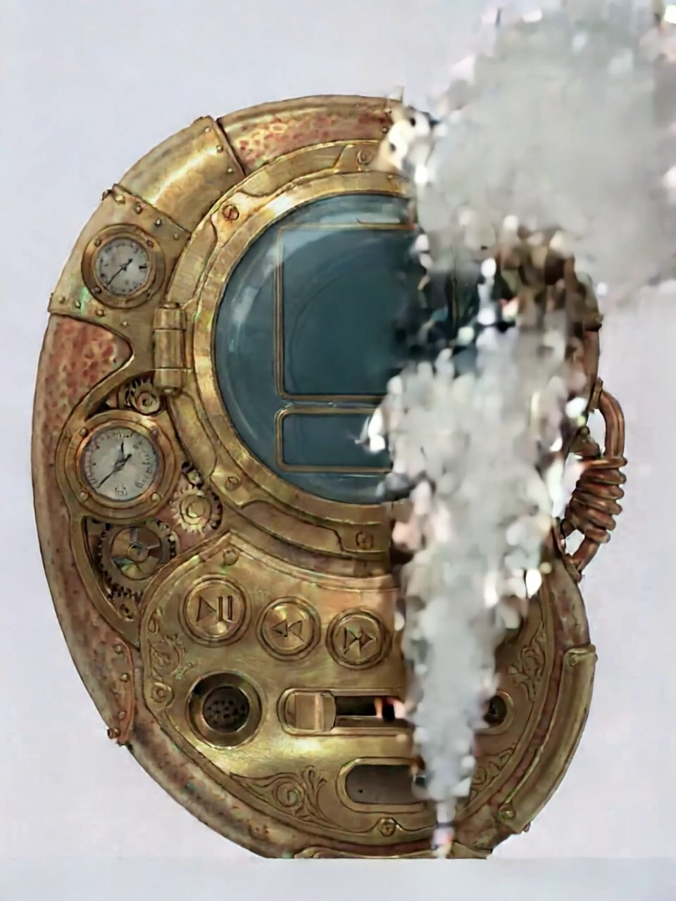
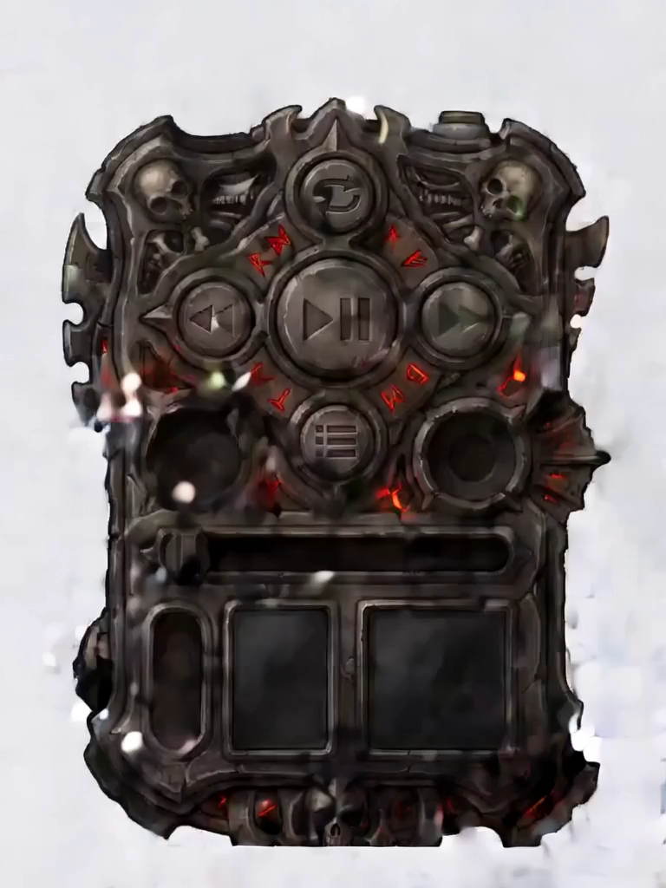
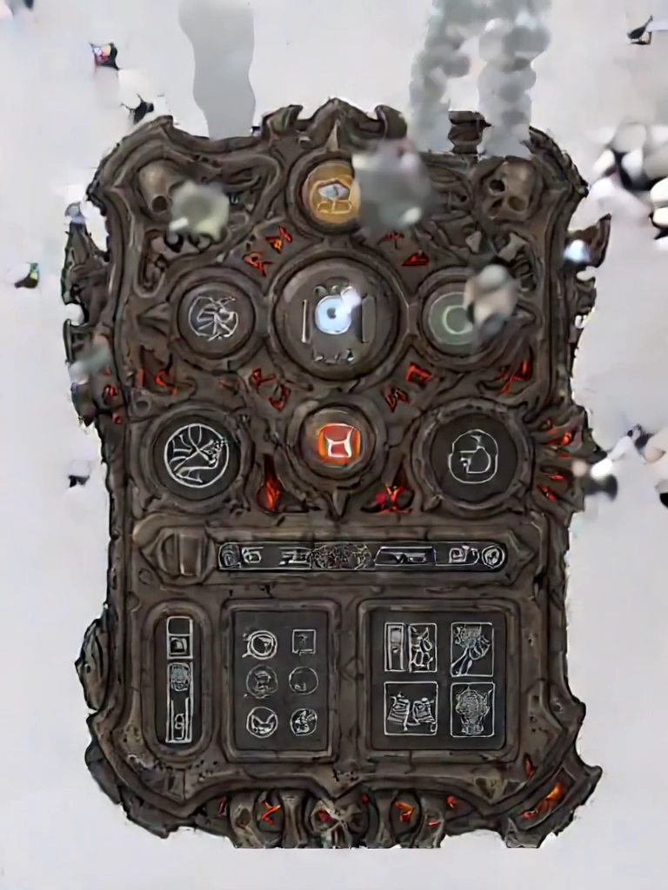
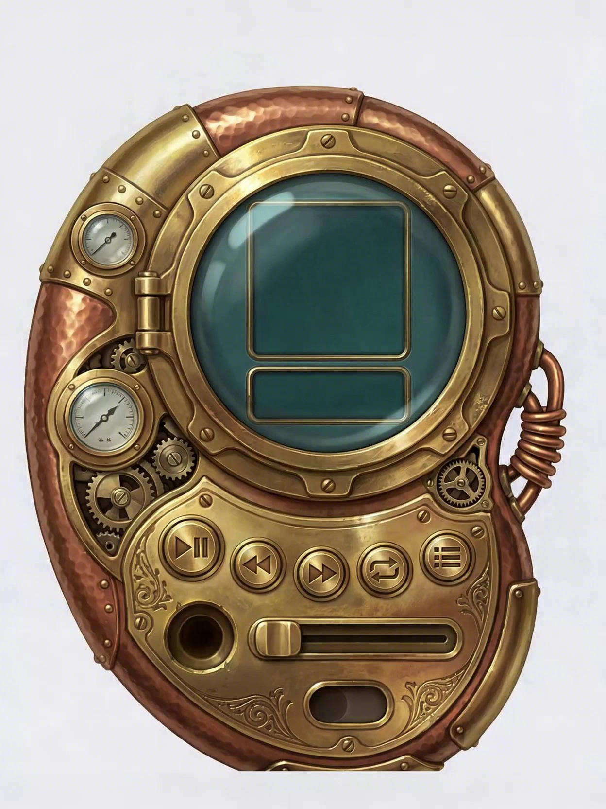
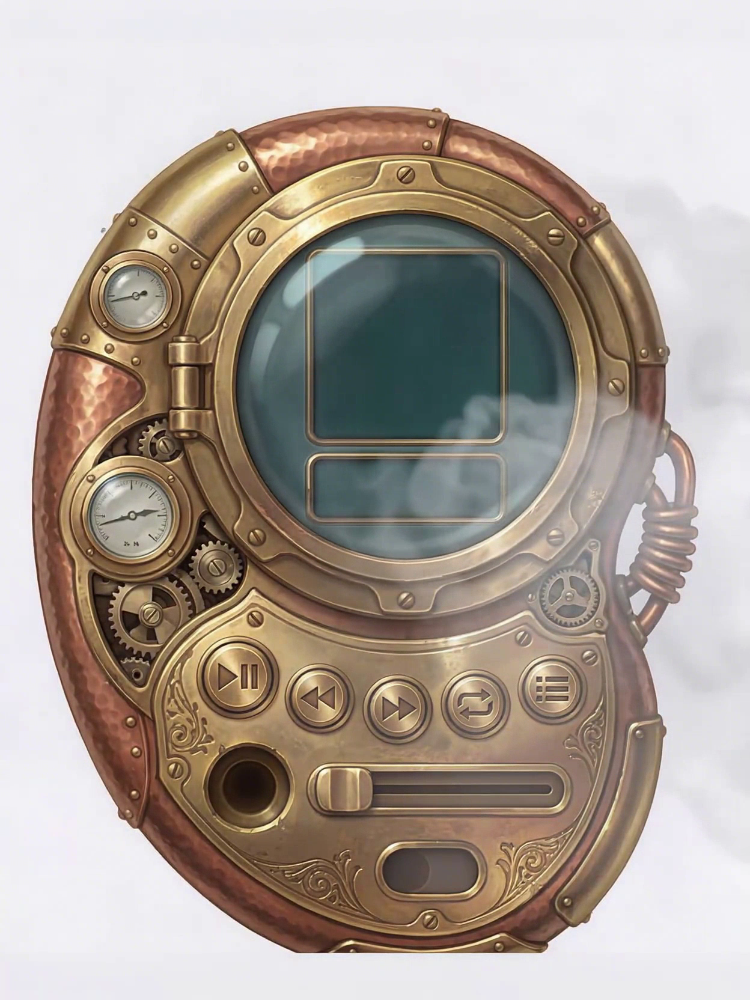
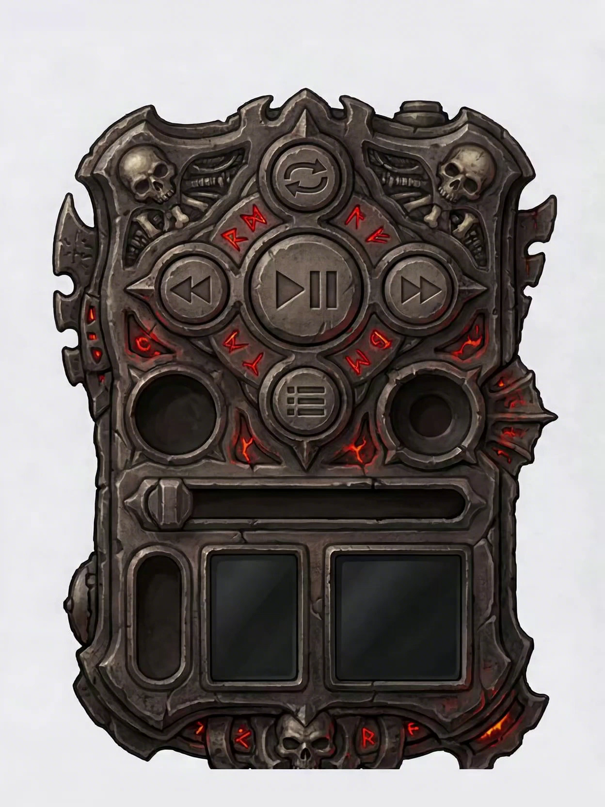
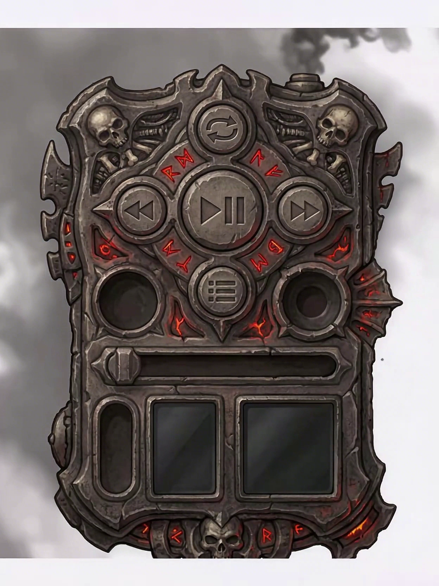